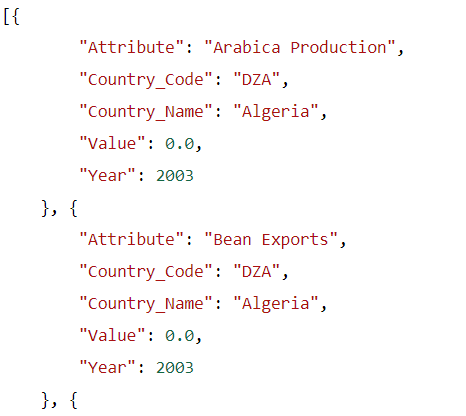

Coffee dataset API Documentation
Endpoints
-
Coffee Production, Consumption and Trade Actuals and Projections
Route: /api/predict
Provide the Quality Measures in JSON Format.
Here is a sample Format:
{"aroma":"7.58","aftertaste":"7.42","acidity":"7.83","body":"7.42","balance":"7.5","uniformity":"10","cleancup":"10","sweetness":"7.42","moisture":"0","cat1defect":"0","cat2defect":"0"}
-
Coffee Production, Consumption and Trade Actuals and Projections
Route: /api/pct
Returns the Combined data of Coffee Production, consumption and Trade of different Countries in different years.
Example Output
Attributes: 'Arabica Production', 'Bean Exports', 'Bean Imports', 'Domestic Consumption', 'Exports', 'Imports', 'Production', 'Roast & Ground Exports', 'Roast & Ground Imports', 'Robusta Production', 'Rst,Ground Dom. Consum', 'Soluble Dom. Cons.', 'Soluble Exports', 'Soluble Imports'
More Information
Knowing the raw material: how many varieties of coffee exist?
All beans are called coffee, but in truth every bean is unique and unrepeatable!
Not only different production areas give a different flavour to the coffee beans, but there are also different intensity levels in the same single area of origin.
Some beans gain maximum advantage when blended with other varieties, as the blend is able to balance missing characteristics, or to cover defects (as it happens with wine); others beans instead express their maximum flavour in their individuality, enhanced by their specificity.
It has hundreds of different cultivations, more than 500 plant genera and over 2000 different varieties, which are constantly being discovered.
The two main species cultivated for coffee production are Coffea Arabica and Coffea Canephora (commonly known as Robusta), and they have different characteristics.
Arabica is richer in aromatic substances but also has lower caffeine content, with a value ranging from 0.8 to 1.4% of the total, compared to 1.7 - 4% of Robusta.
The Arabica plant is also more delicate: in fact, it needs particular soils and climates for its survival, it usually grows at high altitudes, with temperatures ranging from 15° to 24°C and an average annual rainfall of 1500-2000 mm (factors that are found in the coffee cup in the form of a pleasant aromatic complexity).
The Canephora plant is more resistant to diseases, thanks also to the greater quantity of caffeine (a natural pesticide), it can also grow at lower altitudes, with an average temperature range from 24° to 30° and more rainfall. The result of these environmental features is a smaller bean with a strong bitter component.
In addition to the botanical species to which the coffee plant belongs, there are other factors that can influence the intensity and the quality of coffee, and as a consequence also the resulting espresso:
- The geographical region of the plantation
- The type of soil
- Sun exposure
- Harvesting method
- The processing method and the storage conditions
- The roaster's skills
- The packaging of the roasted coffee
Coffee Qualities
Coffee quality is important for professional coffee buyers to determine the consistency, freshness and flavors of a crop. This will determine whether a coffee fetches a low price or a high price, and therefore whether it's good enough to be roasted on it's own or mixed into a blend. The agreed upon characteristics for evaluating coffee are:
Flavor
Also called taste, flavor is a general terms that encompasses the essence or overall perception of all of the other coffee qualities including the body, aroma, acidity, sweetness/bitterness, and aftertaste.
achieve a balance between all of these qualities so that no one quality overpowers all of the others. A coffee's flavor may be complex revealing hints of many different tastes, or may be flat and one-dimensional due to poor processing or storage.
Aroma
Aroma - The smell of freshly-ground coffee beans is known as the fragrance, while the smell of the brewed coffee is the aroma, or bouquet. The aroma is a good indicator of the overall freshness of the coffee as well as its high quality, and will likely reveal whether there are any coffee bean defects (e.g., moldy beans) or off-tastes.
Some typical aroma descriptors include floral and nutty. There are dozens more aroma terms that describe the subtle nuances in the coffee's vapors. A coffee's aroma like may be affected by the roast given to the coffee beans. Freshly-roasted beans tend to have a strong aroma.
Body
Body - Also called mouthfeel, a coffee' body is discerned as a tactile impression on the palate as the coffee coats your tongue and swirls around in the inside of your mouth.
A coffee's body is typically called either light, medium, or full-bodied and describes the overall heaviness, thickness, or viscosity of the coffee as you feel it in your mouth. The coffee's body affects the overall flavor and may deliver a perception of richness.
Some factors affecting a coffee's body include how it was brewed and whether a filter is used as in the automatic drip-filter coffee. brewing method which removes many of the coffee's essential oils and thus affects the overall body. French Press coffee, in contrast, retains all of the oils as does espresso brewed in an espresso machine.
Bitterness
Bitterness - This primary coffee flavor sensation is often experienced as a twinge on the soft-palate near the back of the mouth, or also may be sensed in the aftertaste.
Bitterness is one of the four basic tastes detected at the back of the mouth along with sweet (sucrose), sour (tartaric acid), and salty (sodium chloride). Bitterness (quinine) is characterized by a solution of caffeine and quinine along with other alkaloids.
To some degree, the quality of bitterness is desirable in a coffee, and this is particularly true in espresso and dark roast coffees where the bitterness can add to the fullness of the coffee's taste. As a general rule, Arabica Coffee is less bitter than Robusta coffee (Coffea canephora var. robusta).
Too much bitterness, however, can produce an unpleasant flavor, particularly if the bitterness is caused by over-extraction during the coffee brewing process.
Excess bitterness may also be caused by making too small of an amount of coffee for the grounds used, or by using too fine of a coffee grind. A coffee's bitterness should not be confused with its acidity (see below).
Acidity
Acidity - The quality of coffee's acidity is often perceived as a sharp yet somewhat pleasant aftertaste near the front of the mouth. Sometimes there is a slight tingling or even a numbing sensation on the tip of the tongue. You may also feel a slight dryness at the back of the mouth and under the edges of your tongue.
Make sure not to confuse acidity with bitterness (see above), and also do not confuse it with the ph level of the coffee which refers to the degree of acidity.
Acidity is also very different than sourness which refers to a briny sensation on the tongue tip or a tart taste near the back of the tongue and is considered quite undesirable (e.g., in over-fermented coffee) while acidity may be one of coffee's finest qualities.
The most common descriptor of a coffee with strong acidity is bright. Other terms are lively or perhaps tangy and sharp. A coffee's acidity level often denotes its overall quality.
Acidity may also be described as berry-like or lemony in its subtle qualities. Acidity is often described as pleasant and serves to enhance the coffee's other qualities. A coffee with very low acidity may be described as flat or dull, while a coffee with medium acidity may be called smooth.
Sweetness
Sweetness - The quality of sweetness in coffee provides a smoothness and mildness to the flavor without any harsh or undesirable tastes that might be considered defects. Distinct from the type of sweetness experienced from simply tasting sugar, a coffee' sweetness encompasses a broader quality that is perceived as a distinct sensation which may also produce a fruity flavor on the tongue tip.
Coffee cuppers (professional coffee tasters) evaluate sweetness by swooshing the coffee around in the mouth and then describing the intensity of the coffee's sugary qualities. Sugars as well as glycols and alcohols and some amino acids produce the sweet quality, which may be more specifically described with such terms as fruity, chocolaty, or caramelly.
Aftertaste
Aftertaste - Also called the finish or “nose,” a coffee's aftertaste is is experienced after you swallow a sip of the brew. An aftertaste may be quick or instead long and lingering and may “develop in the finish.” The aftertaste also may be very dry and light, or instead it may be quite sweet.
Bright, delicate coffees with substantial acidity may also have a dry aftertaste and provide somewhat of a parched sensation. The aftertaste may also reveal fruity or spicy notes, or perhaps caramelly or chocolaty qualities.
A clean aftertaste provides a very smooth feeling at the finish rather than a dryness. A clean finish also complements the coffee's flavors and aromas rather than creating any rapid changes in the perception of the flavors.
References and Data Source
References:
- International Coffee Organization: http://www.ico.org
- Coffee Quality Institute: https://www.coffeeinstitute.org
- Espresso Coffee Guide: https://espressocoffeeguide.com
- Coffee Statistics: https://www.coffee-statistics.com/coffee-facts
Data Sources:
- International Coffee Organization: http://www.ico.org
- Kaggle, USDA_Coffee_Data_06_2020: https://www.kaggle.com/michaellight/usda-coffee-data-06-2020
- Kaggle, Coffee Quality database from CQI: https://www.kaggle.com/volpatto/coffee-quality-database-from-cqi
- Rest Countries API: https://restcountries.eu/rest/v2
Contact

Cicily George
Mission driven developer/analyst with proven records in developing
full stack projects, from concept to completion.
Adaptable and transformational leader with ability to work independently.
A fast learner, keen to find the best solutions for the problems,
create effective presentations, skilled in data analytics and visualization.
You can follow Cicily on:
LinkedIn Github Portfolio